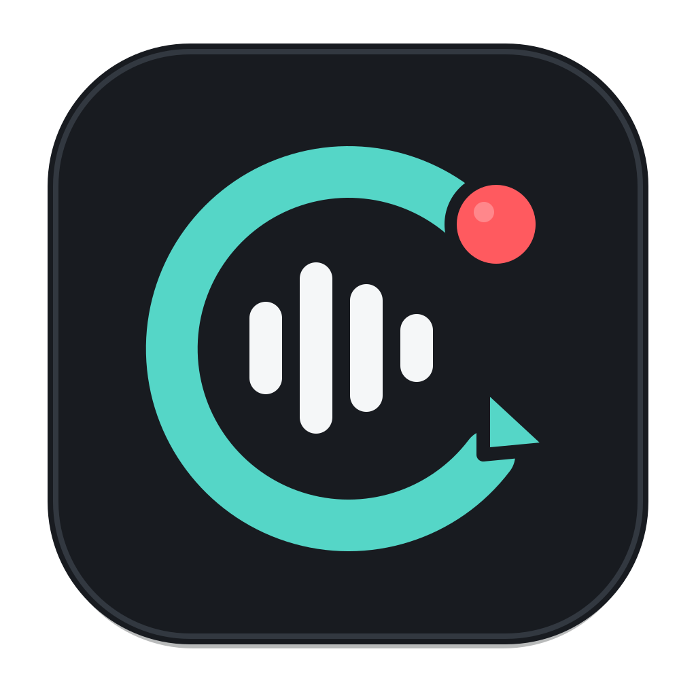
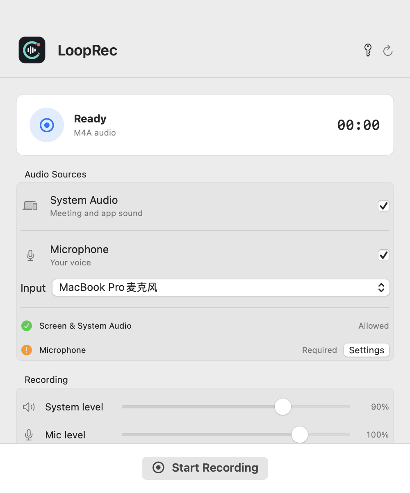

For macOS 15+
LoopRec
Hear both sides.
Keep every word.
A native meeting recorder that captures system audio and your microphone, even when you wear headphones. Private by design and saved locally.
Discover LoopRec
Independent software studio
Independent Mac and web software,
designed and built by Onefly.
01 / Products

For macOS 15+
Hear both sides.
Keep every word.
A native meeting recorder that captures system audio and your microphone, even when you wear headphones. Private by design and saved locally.
Discover LoopRec
02 / Principles
Built around the platform, not merely placed on it.
Your work stays yours. Local-first whenever possible.
Focused software, maintained with care over time.
03 / Writing & Open Source
04 / About
Tosky is an independent software studio by Onefly. It exists to make focused tools for working, thinking, and creating with less friction.
hello@tosky.dev